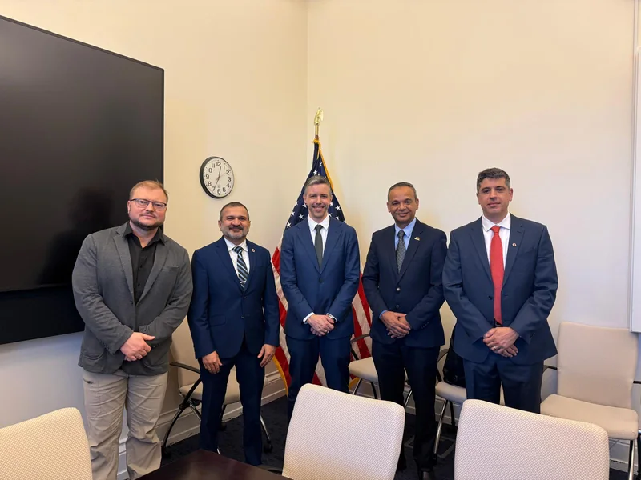
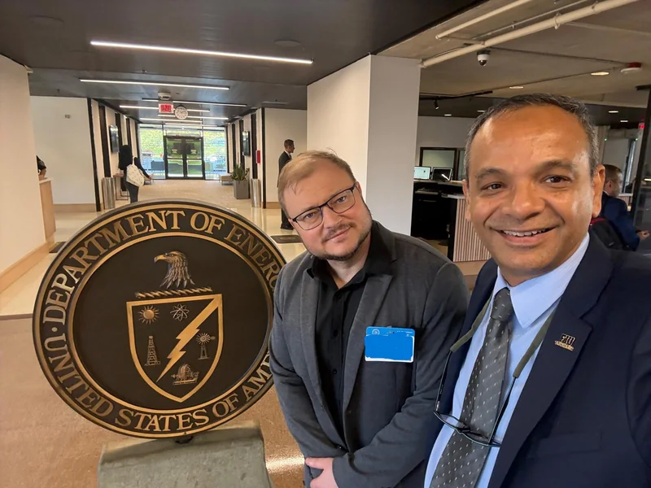

Quantum at FIU
Florida International University in Miami is building a quantum program that connects research, teaching, workforce training, and industry partnerships. The QTM Lab helps lead it.

The FIU Quantum Initiative
Prof. Aleksandr Krasnok and Prof. Janki Bhimani co-founded the FIU Quantum Initiative in 2025 to connect quantum research, teaching, workforce development, and partnerships across the university. Prof. Krasnok is also a member of FIU's university-wide Committee on FIU Initiatives in Quantum Science, Education, and Industry Partnerships.
A quantum computer on campus
In September 2026, FIU signed an agreement to acquire an IonQ Superion 256 trapped-ion quantum computer, expected on campus in late 2027. It will give researchers and students in Miami and across Florida direct access to quantum hardware. IonQ already provides cloud access to quantum computers for our teaching and research. FIU News announcement


Quantum-computing courses
EEE 4423 Introduction to Quantum Computers and EEE 6429 Advanced Quantum Computers form FIU's first undergraduate and graduate quantum-computing sequence. The open lecture course and the textbook Introduction to Quantum Computing and Sensing for Electrical Engineers (Springer, 2026) are available to anyone. Teaching and lectures
Quantum research in the QTM Lab
Our quantum work covers control of superconducting qubit circuits, superconducting cavities and cryogenic interfaces, and quantum sensing with NV-diamond and atomic magnetometers.

Events and partnerships
- Meetings at the White House and the U.S. Department of Energy on priorities for quantum computing, science, and technology in Florida. News story
- In Physics World, Prof. Krasnok argues that universities should judge quantum-computing investments by what students learn and can do with the hardware. News story
- FIU Qiskit Fall Fest: three days of quantum-computing workshops, coding challenges, mentoring, and talks, hosted by FIU with IBM Quantum sponsorship. News story
- FIU at Quantum Beach 2025 in West Palm Beach, which brought together Florida universities, industry, and state leaders. News story
- Talk on FIU's quantum education and sensing research at the Florida Quantum Summit, University of Florida. News story

